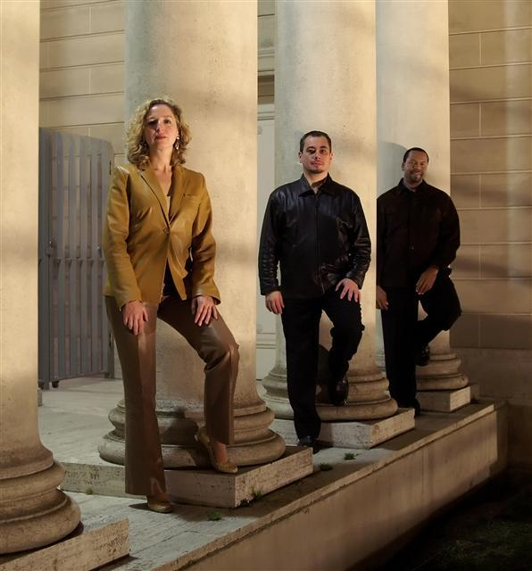

|
|
| Lompoc Concert Association Events 2011-12 SOUTHERN FRIED JAZZ Saturday, Oct 01, 2011-7:30 PM

“Jazz is especially reflective of our nation’s personality and spirit.†Thus states veteran trumpet player Don Edwards in a newspaper interview explaining his ultimate decision to organize the Southern Fried Jazz Band. Edwards, a Big Band veteran andconsummate musician, shared the stage with show biz legends during his tenure in Vegas, including Nat King Cole, Ella Fitzgerald, Mel Tormé, Sarah Vaughn, Frank Sinatra and the Rat Pack, among others. He also backed some perennial jazz greats including Louis Armstrong and the World’s Greatest Jazz Band. Having watched the decline of that vibrant era in music in recent years, Edwards decided to use Southern Fried Jazz as a vehicle to show how vital good jazz is to the nation’s landscape and how it helps people connect with one another on a purely artistic level, allowing them to share in an experience that is part of the nation’s past, present and future. Along with performing music that is a historic part of America’s soundtrack, the bandalso has programs for younger audiences designed to spark their interest in good jazz as listeners and also as musicians. For kids and grown-ups alike, each performance of the Southern Fried Jazz Band evolves into an experience to be remembered long after it has left the stage. The show blends music with narration and personal anecdotes into a seamless history lesson of jazz in America. Instrumentals are accented with vocals and stirred with lots of seasoning and spontaneity into a tasty recipe that never fails to “WOW†its audience. These ingredients have launched Southern Fried Jazz from the Piedmont foothills of North Carolina into the national spotlight in short order.
LARA DOWNES pianist FRIDAY, Jan 20, 2012-7:30 PM

A captivating presence both on and offstage, critically acclaimed Steinway Concert Artist Lara Downes is a brilliantly virtuosic, effervescent young pianist dedicated to creating performances that run the gamut of musical styles from Bach to the Beatles. Lauded by NPR as “a delightful artist with a unique blend of musicianship and showmanship†and praised by the Washington Post for her stunning performances “rendered with drama and nuance,†Lara has won over audiences at some of the world’s most prestigious concert venues, including Carnegie Hall, Lincoln Center, the Kennedy Center, Queen Elizabeth Hall London, the Vienna Konzerthaus, and the Salle Gaveau Paris. She is currently Artist in Residence at the Mondavi Center for the Performing Arts at UC Davis. Along with her robust performance schedule, Lara maintains a strong commitment to working with young audiences. She is the Founder and President of the 88 KEYS® Foundation, a non-profit organization that places pianos in K-12 public schools. Lara is also the Artistic Director of the Rising Stars of California program, a statewide initiative that showcases California’s most gifted young musicians in mainstage concerts and community outreach performances. In addition to the excitement Lara brings to the concert stage, her commercial recordings have been met with tremendous critical and popular acclaim. Her debut CD, Invitation to the Dance (Arkadia/Postcard, 2000) was called “a magical little recording†by NPR, and her CD American Ballads was ranked by Amazon.com among the four best recordings of American music ever made CAFE MUSIQUE Swing, Gypsy, Tango, Waltzes & Folk Saturday, Mar 31, 2012-7:30 PM

Classical, swing, gypsy, folk and tango all find expression in the final take that defines the rich and exciting sound of Café Musique. By combining the beauty of the violin with the subtle expression of the accordion, Café Musique has harnessed the European gypsy sound as its own. Café Musique hails from the Central Coast of California. The group is quite unlike any other band you might hear out on the music circuit. The group maintains that it has an identity crisis and it's easy to see why what with the mixture of musical backgrounds that each member brings to the fold. Add compelling vocals with two and three part harmonies along with timeless standards and new compositions and you start to have an idea what the band is all about. The members of Café Musique are Brynn Albanese on violin and vocals, Piper Heisig on percussion and vocals, Duane Inglish on accordion, Fred Murray on bass, and Craig Nuttycombe on guitar and vocals. THE POULENC TRIO oboe, bassoon, piano Saturday, Apr 21, 2012-7:30 PM

Hailed by the Washington Post in May 2008 for its “intriguing and beautifully played program … convincing elegance … [and] near-effortless lightness and grace,†the Poulenc Trio brings together three uniquely gifted virtuosos: oboist Vladimir Lande, bassoonist Bryan Young and pianist Irina Kaplan. Combining brilliant 21st-century vibrancy with the best of European instrumental tradition, the trio’s performances leap beyond the ordinary concert experience to a world of beautiful sonorities, playful rhythms and dramatic excitement. As the finest of a select few professional wind trios, the Poulenc Trio is committed to expanding the repertoire through the rediscovery of old masterpieces and the commissioning of new works. The trio was recently featured at Italy’s Ravello Festival, where they premiered two new compositions written especially for the group by Italian composer Gaetano Panariello and Russian-American composer Igor Raykhelson. These works add to the trio’s growing catalog of commissions, which include a new triple concerto with orchestra. The trio’s busy touring schedule has included recent tours of Russia with Hilary Hahn (including the State Hermitage Museum), Italy (including the Ravello and Ville Vesuviane festivals), the Caribbean and multiple appearances in every region of the United States (including the Kennedy Center in Washington, D.C.). Highlights of the trio’s recent tours include appearances in New York City, Washington, D.C., and Baltimore; collaborations with clarinetist Alexander Fiterstein and the National Gallery Chamber Players from Washington, D.C.; and concerts across the United States including California, Florida, Hawaii, Louisiana, Maryland, New York, Ohio, Oklahoma and West Virginia. Since 2004, the Poulenc Trio has directed “Music at the Museum,†a unique and highly successful partnership between the trio and some of the great American museums, including the Baltimore Art Museum, the National Gallery of Art in Washington, D.C., and the Zimmerli Art Museum at Rutgers University. Each entertaining and thought-provoking program is carefully designed to complement a current exhibit or historical artistic concept. In the press, the trio has garnered positive attention in recent full-length profiles in Chamber Music Magazine and the Double Reed Journal. The group has been called “virtuosos of classical and contemporary chamber music†in one profile on Russian television, and reviews from across the U.S. have praised the trio’s “new and delicious sounds,†calling them “three virtuosi in complete command of their instruments†who “played with spirit and grace and brought the near-capacity crowd to its feet.†Individual bios Bryan Young, bassoon, a Washington, D.C., native, has been praised for his “voluptuous sound†by the Double Reed Journal. A prizewinner of the 2002 Gillet International Bassoon Competition, he has appeared as soloist with the National Symphony and Baltimore Symphony Orchestras, as well as in recitals across the United States and around the world. The Washington Post wrote, “Young’s music dances with a lightness and grace uncommon for his instrument.†Bryan is principal bassoonist of the Baltimore Chamber Orchestra and performs regularly with the IRIS Chamber Orchestra in Memphis. He trained at the Peabody Conservatory in Baltimore and at Yale University. Vladimir Lande, principal oboist of the Baltimore Opera, was born in St. Petersburg, Russia. He graduated from the St. Petersburg Conservatory with degrees in both oboe and piano. As principal oboist of the St. Petersburg (Leningrad) Philharmonic Orchestra, he recorded all the Brahms symphonies as well as symphonies by Tchaikovsky, Beethoven and Shostakovich, and performed with distinguished conductors including Leonard Bernstein, Claudio Abbado, Valery Gergiev and Yuri Temirkanov. Recent tours have brought him to New Zealand, Australia, Europe and across most of the United States. Vladimir is on the faculty of Johns Hopkins University, where he conducts the chamber orchestra. Pianist Irina Kaplan is a graduate of the St. Petersburg Conservatory in Russia. Winner of the Baltimore Chamber Music Award and the Montpelier Recital Competition, Irina has appeared in series including the Yale Gordon Concert Series, the Bachanalia Recital Series and the New York Times Young Performers Series. Concerts abroad in Russia, Italy, England, Germany and the Caribbean have led to critical praise of her “beauty and brilliance of sound, astonishing flexibility and penetrating interpretation.†Fanfare Magazine hails her as “a strong pianist who doesn't settle for an accompanying role.†Irina is on the piano faculty at the Peabody Institute. | |
|